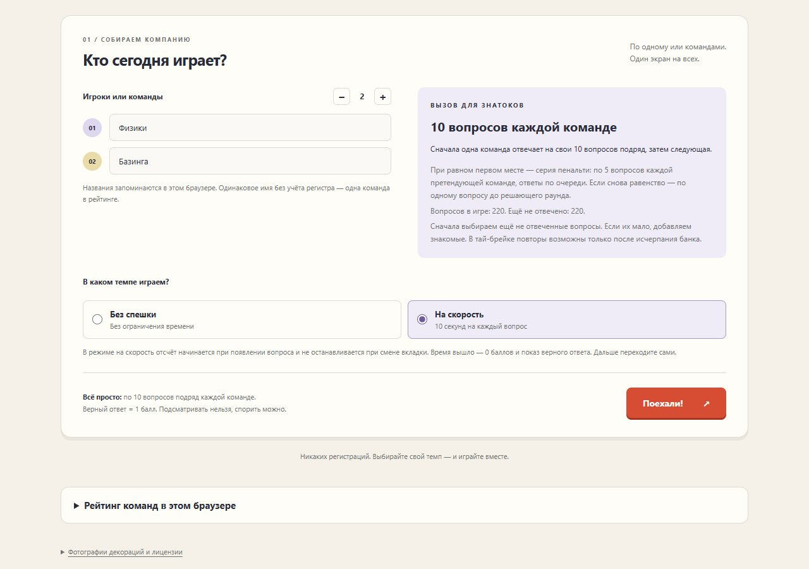
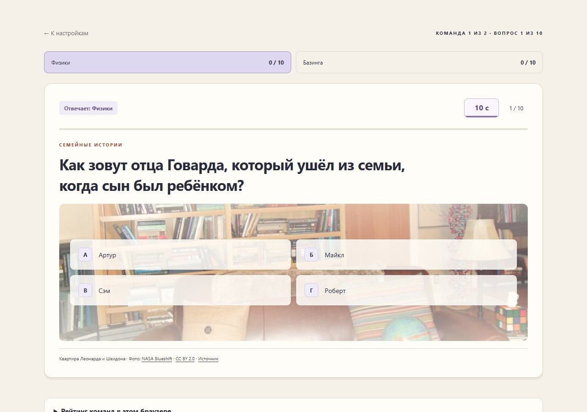
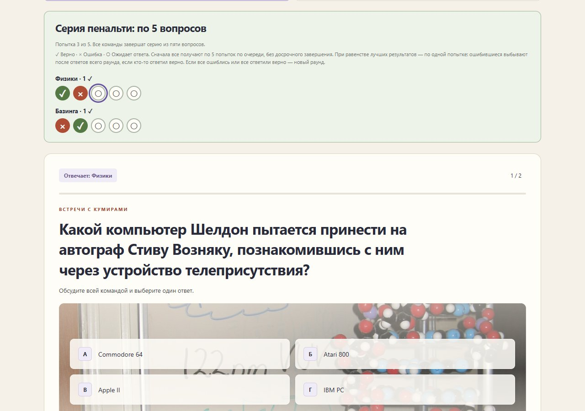
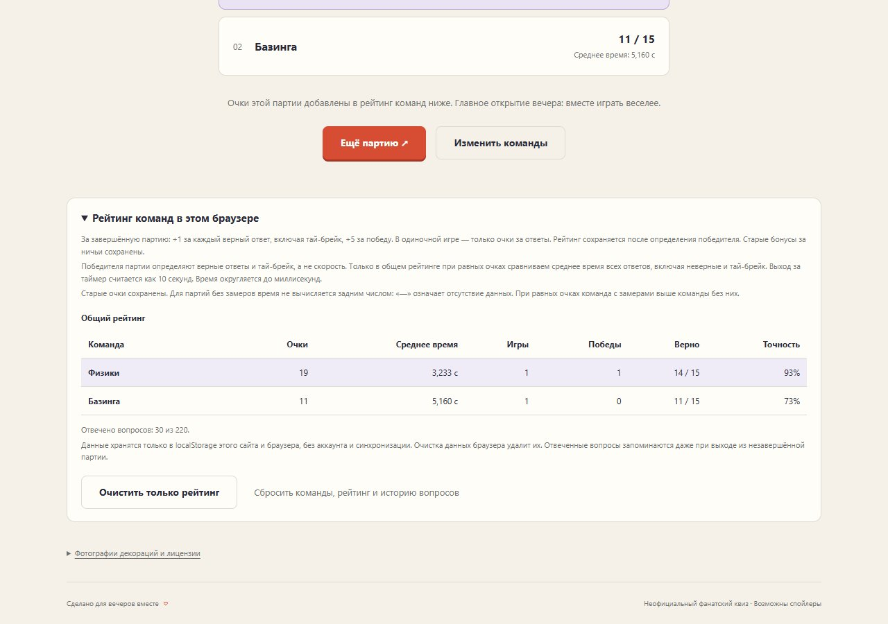

Вопросы и объяснения
Банк из 500 вопросов. Сначала выбираем ещё не отвеченные; если их мало, добавляем знакомые. В долгом тай-брейке новый круг начинается только после исчерпания банка.
Таймер вопроса продолжает идти. Вернитесь во вкладку «Игра», чтобы ответить.
Музыка начнётся после первого нажатия. Вы можете её выключить.
Кто лучше помнит Шелдона и компанию? Собирайтесь на диване — сыграем в квиз по «Теории большого взрыва».
Никаких регистраций. Выбирайте свой темп — и играйте вместе.
✓ Верно · × Ошибка · ○ Ожидает ответа. Сначала все получают по 5 попыток по очереди, без досрочного завершения. При равенстве лучших результатов — по одной попытке: ошибившиеся выбывают после ответов всего раунда, если кто-то ответил верно. Если все ошиблись или все ответили верно — новый раунд.
Банк вопросов исчерпан: серия продолжается с повторными вопросами.
Обсудите всей командой и выберите один ответ.
· Фото: · · Источник
Очки этой партии добавлены в рейтинг команд ниже. Главное открытие вечера: вместе играть веселее.
За завершённую партию: +1 за каждый верный ответ, включая тай-брейк, +5 за победу. В одиночной игре — только очки за ответы. Рейтинг сохраняется после определения победителя. Старые бонусы за ничьи сохранены.
Победителя партии определяют верные ответы и тай-брейк, а не скорость. Только в общем рейтинге при равных очках сравниваем среднее время всех ответов, включая неверные и тай-брейк. Выход за таймер считается как 15 секунд. Время округляется до миллисекунд.
Старые очки сохранены. Для партий без замеров время не вычисляется задним числом: «—» означает отсутствие данных. При равных очках команда с замерами выше команды без них.
Завершите первую партию, чтобы появился рейтинг.
Данные хранятся только в localStorage этого сайта и браузера, без аккаунта и синхронизации. Очистка данных браузера удалит их. Отвеченные вопросы запоминаются даже при выходе из незавершённой партии.
Рейтинг: +1 за каждый верный ответ, включая пенальти, и +5 за победу. В одиночной игре — только очки за ответы. Скорость не определяет победителя партии: среднее время используется лишь при равных очках в общем рейтинге.
Банк из 500 вопросов. Сначала выбираем ещё не отвеченные; если их мало, добавляем знакомые. В долгом тай-брейке новый круг начинается только после исчерпания банка.
Названия и число команд восстанавливаются при следующем открытии. Имена из рейтинга доступны в подсказках. Имя без учёта регистра — одна команда; новое имя создаёт отдельную запись.
Очки, победы, число игр, точность и среднее время ответа. Лидер виден крупно сверху. Учитываем все ответы, включая неверные и пенальти; тайм-аут считается как 15 секунд.
Пять кружков попыток, затем дополнительные раунды: ✓ — верно, × — ошибка, ○ — очередь ещё не дошла. Текущая попытка выделена, выбывшие команды отмечены.
Тихая музыка в меню, более напряжённая во время игры. Запускается после первого нажатия, отключается кнопкой в шапке и затихает в скрытой вкладке. Анимация таймера учитывает настройку уменьшения движения.
Можно очистить только рейтинг, сохранив команды и историю вопросов, либо сбросить всё. Кнопки доступны при наличии рейтинга и вне игры; удаление требует подтверждения.
Всё сохраняется только в этом браузере на этом адресе сайта, без аккаунта и синхронизации. Очистка данных браузера удалит историю. Отвеченные вопросы запоминаются сразу, рейтинг — только после завершения партии. Текущая партия после перезагрузки не восстанавливается.
Разделы справки и скриншоты не ставят активный вопрос на паузу. Открывайте их до начала партии или после ответа.
Скриншоты интерфейса с демонстрационными командами и результатами. Нажмите на изображение, чтобы открыть его крупнее в новой вкладке.




На игровых скриншотах использованы те же фотографии декораций, что и в квизе. Авторы и лицензии указаны ниже.
Фотографии декораций «Теории большого взрыва» на студии Warner Bros. в Бербанке, а не кадры из эпизодов. Источник — Wikimedia Commons.
Все фотографии доступны по лицензии CC BY 2.0. В приложении уменьшены; при показе применяются кадрирование, лёгкое размытие и осветление. Авторы не связаны с этим квизом.